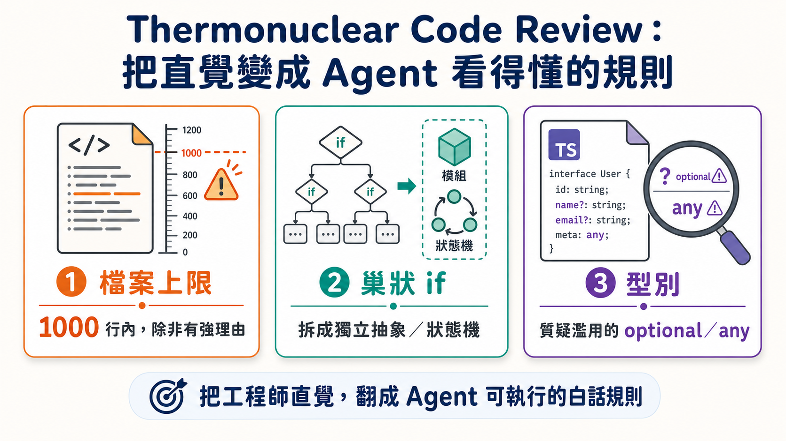
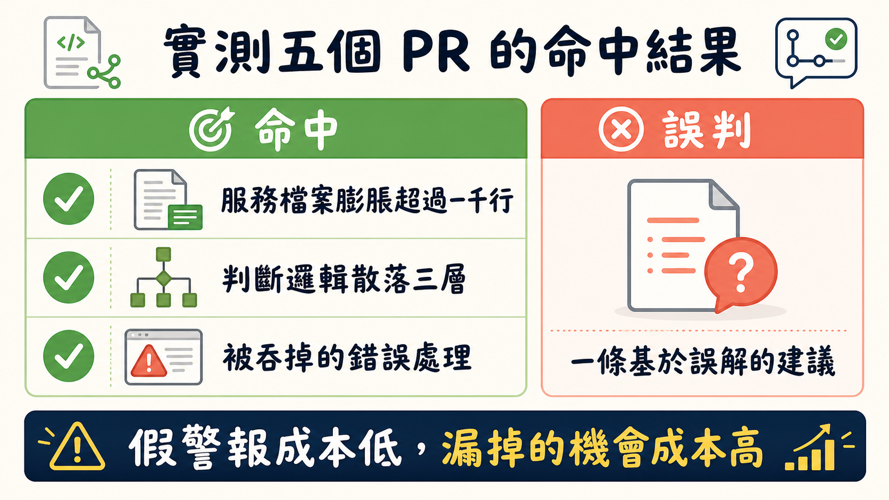

一份程式碼審查技能檔案，累積了 109,000 顆星星，作者自己卻打從心底不滿意。這聽起來矛盾，但如果你也讓 AI agent 幫你寫過程式碼，大概能懂那種感覺：東西能跑，測試也過了，可是心裡總有個聲音說「這樣真的可以嗎」。Matt Pocock 就是帶著這種不滿意，四處尋找別人怎麼寫審查提示詞，最後在 Cursor 團隊的一份技能檔案裡找到了值得抄的東西——一份被命名為「thermonuclear code quality review」（熱核等級程式碼品質審查）的 skill.md。
這名字取得誇張，但誇張是刻意的。它要處理的是一個所有用 agent 寫程式的人都會撞到的結構性問題：你把一段 diff 丟給 AI，叫它審查，它幾乎肯定只會在 diff 的範圍內打轉。改了哪幾行，就審那幾行的邏輯對不對、有沒有明顯的 bug。這其實很合理——diff 就是它被交付的工作邊界，agent 沒有理由主動跨出去。問題是，程式碼品質從來不是「這幾行對不對」的問題，而是「這幾行放在整個系統裡合不合理」的問題。一個函式單獨看完全正確，放進脈絡裡卻可能是重複造輪子，或是把原本乾淨的模組結構鑿出一個洞。
Cursor 這份技能檔案的做法，是直接把 agent 的視野撐開。指令裡寫得很明白：從當前分支的改動出發，但眼光要放到整個程式庫，去找任何能讓程式碼變得更好的機會——即使那個機會離這次的改動有點距離。它甚至加了一句「be ambitious」，重複出現了不只一次。這不是修辭上的强調，而是針對 agent 保守傾向的矯正：如果你不明講「去吧，大膽一點」，agent 傾向於只做最小必要的修補，絕不會主動提議「這個檔案應該整個拆掉重寫」。
技能檔案裡塞了不少具體的量化規則，這些規則讀起來像是工程師的直覺被翻譯成了 agent 看得懂的白話文。比方說，不准一個 PR 把檔案從一千行以下推到一千行以上，除非有很強的理由。這條規則背後的邏輯其實跟 agent 怎麼「讀」程式碼有關：一個超大檔案對 agent 來說，意味著它得把整個檔案塞進上下文視窗才能找到自己要的那一小段。相對地，如果你把邏輯拆成多個小檔案，檔名本身就變成一種索引——agent 光看檔名就能判斷「這裡面大概有沒有我要找的東西」，不必每次都整份吞下去。Matt 提到自己平常抓的門檻是五千 token 上下，跟這裡的一千行大致對得上，算是兩邊獨立得出類似結論的巧合。
另一條規則盯著巢狀 if 判斷式——如果一次改動在程式裡塞進了奇怪的、看起來很隨興的條件分支，這份技能檔案要求 agent 把它當成「設計問題」處理，而不是隨手打個 nit 就算了。具體做法是把那段邏輯抽成獨立的抽象層、helper、狀態機，或者一個政策物件。這其實是在教 agent 辨認一種很常見的腐化模式：程式碼不是一次爛掉的，而是每次改動都順手加一個 if，加著加著就變成一坨誰都不敢碰的邏輯泥巴。
型別相關的規則也值得一提，而且點出了一個 Matt 特別有感的毛病：agent 幾乎每次幫 React 元件加新的 prop，都會把它設成 optional，哪怕這個 prop 其實永遠是必填的。這背後的心態大概是想降低改動的風險——加一個必填欄位感覺比較「危險」，加一個選填欄位比較安全。但結果是型別系統慢慢失去意義，程式碼裡到處都是不必要的 undefined 檢查。技能檔案要求 agent 主動質疑這種不必要的 optionality，質疑濫用的 any、unknown、以及過多的型別轉換——凡是有機會畫出更清楚的型別邊界，就該去畫。

光讀規則畢竟隔靴搔癢，Matt 直接把這份技能拿去審查自己開源專案 Sandcastle 最近合併進 main 的五個 PR，看它能挖出什麼。結果相當程度上證明了「大膽一點」這個策略是有效的：它抓到一個服務檔案膨脹超過一千行、混雜了太多職責，提出的拆分方案是對的；它抓到一個特定功能的判斷邏輯散落在三層程式碼裡，建議把這些變體收進一個型別而不是靠零散的 if 分支硬撐，這條建議也站得住腳；它甚至挖出一段被吞掉的錯誤處理——一段包在 try 裡的 exec 呼叫失敗後直接悄悄回傳 false，沒有人會注意到。但它也給出至少一條明顯基於誤解系統全貌的建議，把兩個原本不需要統一的欄位硬要合併成一個判別聯合型別。
這個「幾成命中率」的結果，反而是整份審查裡最有意思的部分。命中率不是滿分，但這件事沒有想像中糟——因為假警報和漏掉的機會，兩者的代價完全不對等。一條錯誤的建議，你花十秒鐘看一眼就能判斷「這個不對，忽略」，成本極低。真正可怕的是那些你永遠不會知道自己錯過的東西：某個本來可以砍掉一整層抽象、讓程式碼變簡單一半的機會，如果沒人（或沒有 agent）主動提出來，它就永遠不會發生，而你也不會意識到自己損失了什麼。從這個角度看，寧可讓審查工具偏向「說太多」，也不要讓它偏向「保守到什麼都不說」。

不過這份技能檔案也有明顯的破綻。它整篇讀下來充滿重複——同一個「大膽一點」「消除不必要的複雜度」的意思用不同措辭講了好幾遍，像是作者自己也拿不準怎麼一次講清楚，乾脆多寫幾種說法碰運氣。對一個要靠有限上下文視窗工作的 agent 來說，這種累贅本身就是一種諷刺：一份教人精簡程式碼的文件，自己卻不夠精簡。更值得注意的缺口是，整份技能檔案從頭到尾沒有提到測試，沒有提到程式碼的「縫」在哪裡——也就是未來要修改這段邏輯時，可以安全下刀的位置在哪裡。它只盯著原始碼本身的結構好不好看，卻沒去問「這段程式碼好不好改」。而後者，才是一個程式庫長期能不能維持健康的真正關鍵——今天審查通過的程式碼，如果沒有測試撐著，半年後沒人敢動它，再漂亮的抽象也只是一具好看的屍體。
這大概是這次拆解技能檔案最值得帶走的一件事：讓審查工具變得有企圖心、願意提出結構性的重寫建議，確實能挖到真正有價值的東西，而多出來的假警報並不是系統的缺陷，是這個策略必然附帶的成本，而且是划算的成本。但企圖心本身不能取代完整性——一份只看程式碼寫得好不好看、卻不問測試夠不夠、改動安不安全的審查清單，終究只解決了問題的一半。